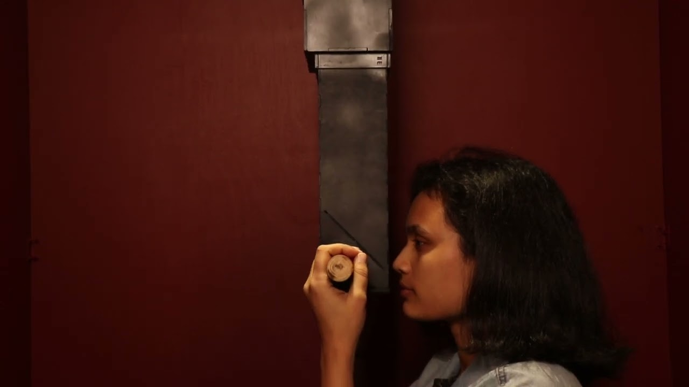
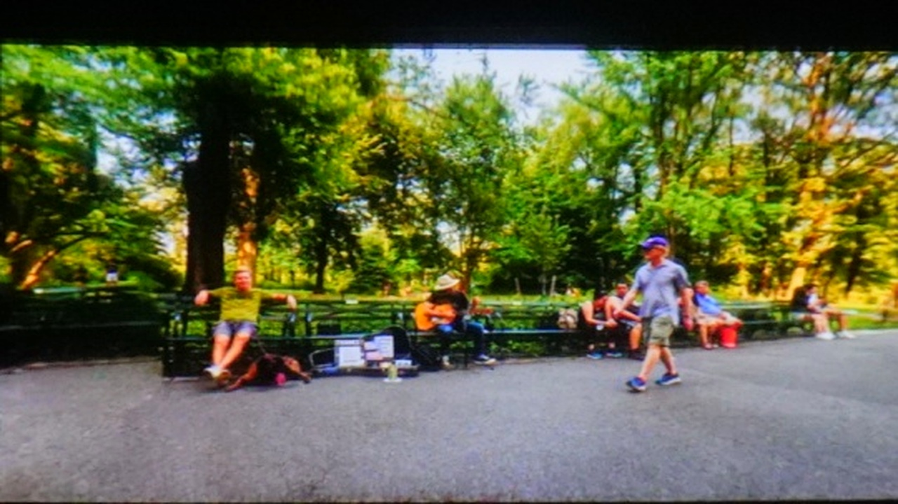
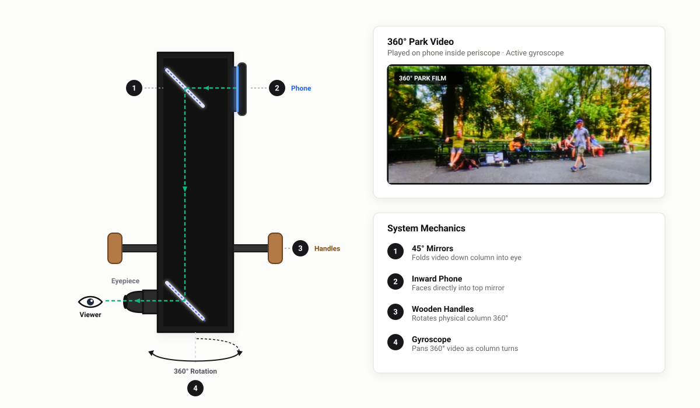
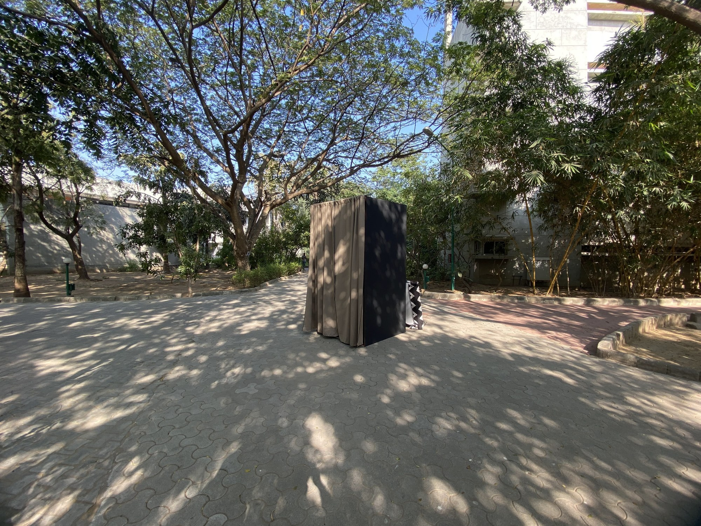
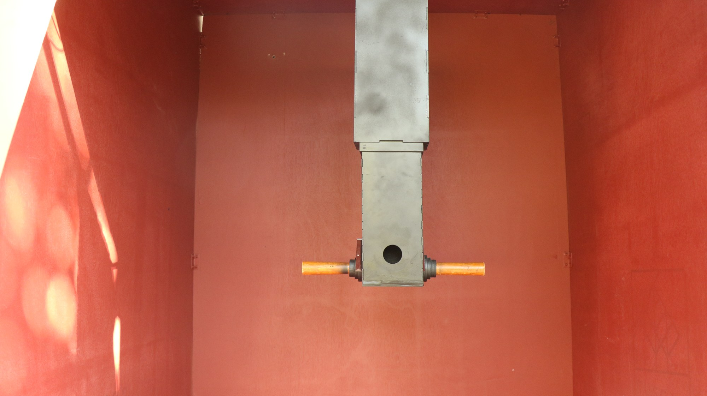
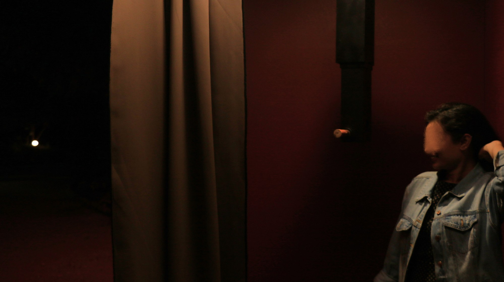

Sonder
An interactive installation exploring public presence, physical agency, and the profound interiority of passing strangers.
“We believe we are the main character in the solo movie of the universe, but alas, our film is just one of many. Everyone else, the people we think are supporting and background cast in our lives, live as the protagonists of their own narratives.”

Exhibition walkthrough: Outdoor threshold booth, campus walkway staging, and visitor interaction in public space.

360° Interactive ViewThe 360° film experienced inside the periscope viewport. Click and drag in the frame to rotate the view, mirroring the physical periscope rotation.
Open on YouTube ↗The Concept
Stepping into Another Person's Shoes
We often move through public spaces assuming we are the main character in the solo movie of the universe, treating everyone around us as supporting extras. But every stranger has a life just as vivid, complicated, and full of highs and lows as our own: a realization known as sonder.
In crowded environments, people rarely pause. We form quick, two-dimensional judgments of passersby or keep our distance out of habit. Sonder Eye creates an intentional pause: a quiet, standalone viewing bubble placed directly along a busy pedestrian walkway.
Inside, the viewer steps up to a suspended periscope looking out into a distant park across the world. Looking through the eyepiece, you encounter snippets of everyday human moments, prompting you to focus on a random stranger, imagine their past and present, their highs and lows, and recognize them as the lead character in their own story. After a few moments, you step away, carry their story with you, and rejoin the crowd with a renewed sense of empathy.
Physical Viewport vs. Isolated VR
VR headsets isolate the user and create awkward hesitation in open public spaces. The physical periscope offers an immediate, walk-up encounter with zero friction: anyone can step up and peer inside without putting on hardware.
Physical Agency & Tactile Navigation
Rather than passively watching a flat screen, the visitor physically holds the wooden handle and turns the periscope to pan the view. Taking physical control of where you look creates a deliberate, personal commitment to discovering each person's story.
Visitor Experience
A Five-Stage Spatial Journey
Walking the Path
Moving through the busy campus walkway, seeing passersby as background figures.
Entering the Bubble
Stepping past the blackout curtain into a quiet, terracotta-walled sanctuary.
Approaching the Periscope
Taking hold of the turned-wood handle and looking into the optical eyepiece.
Exploring the 360° View
Physically rotating the column to follow strangers and discover their stories.
Rejoining the Crowd
Stepping back out onto the path with awakened empathy for the people walking past.
The System
Dual-Mirror Mechanics & Gyroscopic Navigation
The installation functions as an analog-digital folding instrument. Instead of an open aperture looking outside, a smartphone is securely mounted in the upper right slot with its screen facing inward toward the top mirror, continuously looping the 360° park video.
Light emitted from the screen reflects off the top 45° mirror, travels vertically straight down through the hollow optical column, strikes the bottom 45° mirror, and projects horizontally out through the eyehole into the viewer’s eye. Mounted on a heavy 360° rotational turntable bearing, grasping the turned-wood handle physically turns the column, triggering the phone’s onboard gyroscope to pan through the 360° scene in real time.

The analog-digital system: 1. Dual 45° internal mirrors folding light into the eyehole. 2. Inward-mounted phone playing the 360° park film. 3. Turned-wood handles. 4. Base bearing enabling 360° physical rotation.
Spatial Staging
Threshold Booth & Physical Build
I staged the installation directly along the central pedestrian walkway at NID Gandhinagar. A standalone timber booth draped in blackout canvas stood under the outdoor tree canopy, creating a quiet, shaded bubble in the middle of a busy campus corridor.
Inside, the terracotta-painted enclosure sheltered the visitor from outdoor glare and ambient chatter, creating an intimate space to focus entirely on the periscope.

Site Staging: Standalone blackout booth positioned along the primary campus pedestrian walkway.

The hand-crafted periscope suspended inside the terracotta booth with its turned-wood grip handle.

Visitor interaction: Stepping into the booth, grasping the handle, and steering through the 360° park scene.
Fabrication: Laser-cut timber chassis, dual 45° internal acrylic mirrors, hand-turned wooden grip handle, and a smooth 360° rotational turntable bearing.
Theoretical Grounding
Conceptual Influences
- John Koenig (2012): The Dictionary of Obscure Sorrows. Origin of the word Sonder: the realization that each random passerby is living a life as vivid and complex as your own.
- Edward W. Said (1978): Orientalism. The social construction of the "Other", and how our minds reduce strangers to flat caricatures.
- Stanley Milgram (1972): The Familiar Stranger. Research on urban anonymity, mutual co-presence, and unspoken recognition among city dwellers.
- Jane Jacobs (1961): The Death and Life of Great American Cities. The sidewalk ballet of daily observation, public trust, and civic encounters.